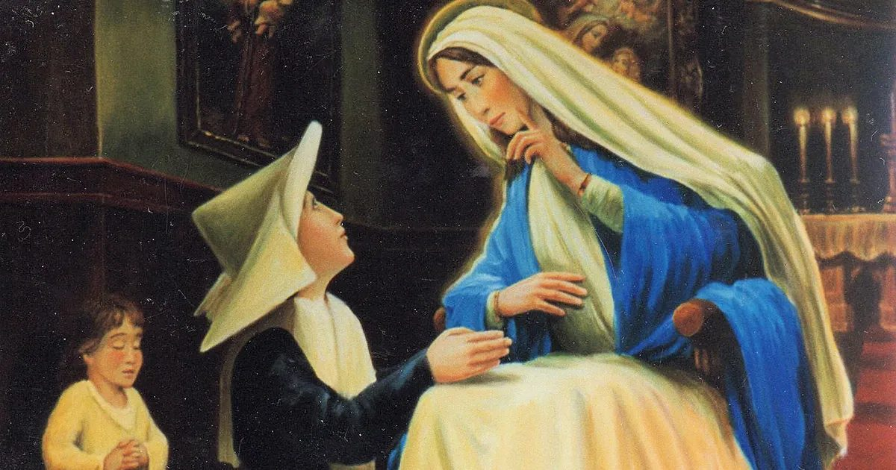
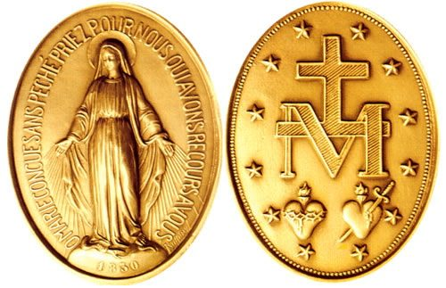
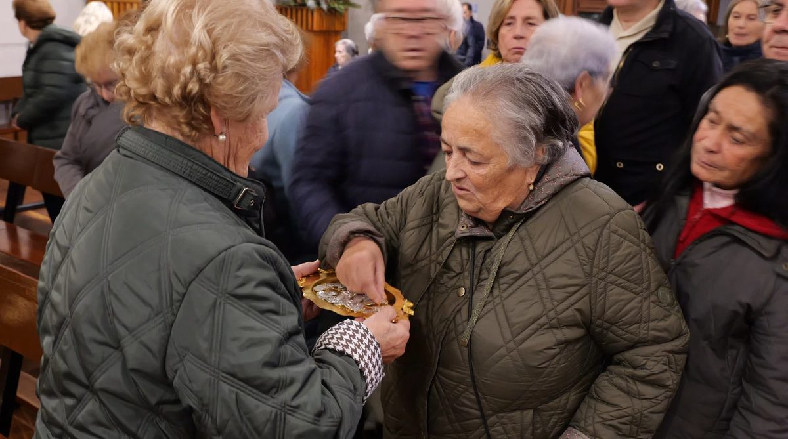
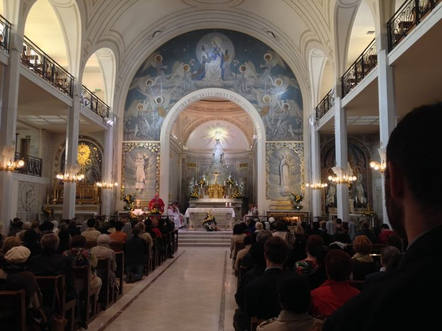

Historia de la Aparición (1830)

En el verano de 1830, Catalina Labouré era una joven novicia de veinticuatro años en la congregación de las Hijas de la Caridad, en la casa madre de la Rue du Bac, en el corazón de París. De origen campesino, humilde y silenciosa, Catalina guardó celosamente el secreto de lo que había visto durante más de cuarenta años, revelándolo solo a su director espiritual, el padre Jean-Marie Aladel, poco antes de morir.
La noche del 18 al 19 de julio de 1830, Catalina fue despertada por un niño que la condujo hasta la capilla del convento. Allí, durante varias horas, se encontró con la Virgen María, quien le habló de los tiempos difíciles que se avecinaban para Francia y para el mundo entero, y la llamó a la oración y a la confianza en Dios.
Meses después, hacia finales de noviembre, la Virgen volvió a aparecerse a Catalina en la misma capilla durante la oración comunitaria. En esta ocasión, la Santísima Virgen se presentó de pie sobre un globo terráqueo, con los pies aplastando una serpiente y los dedos adornados de anillos que despedían rayos de luz deslumbrante. La Virgen explicó que esas luces eran las gracias que Ella obtiene para quienes se las piden, mientras que los anillos de donde no salía luz representaban las gracias que los hombres olvidaban solicitar.
Alrededor de esta imagen apareció una inscripción en letras doradas: "O María, concebida sin pecado, ruega por nosotros que recurrimos a ti." Luego el cuadro giró y Catalina vio el reverso del futuro objeto: una M coronada por una cruz, con una barra horizontal debajo, flanqueada por el Inmaculado Corazón de María coronado de rosas y el Sagrado Corazón de Jesús coronado de espinas, todo ello rodeado por doce estrellas. La Virgen pidió que se acuñara una medalla con ese diseño, prometiendo gracias especiales para quienes la llevaran con devoción y confianza.
El Diseño de la Medalla

El anverso de la Medalla Milagrosa representa a la Santísima Virgen de pie sobre un globo que simboliza el mundo, con los pies aplastando la cabeza de la serpiente antigua, imagen tomada del Génesis y del Apocalipsis. Sus manos están extendidas hacia abajo y de los anillos que adornan sus dedos brotan torrentes de luz radiante que iluminan la tierra: cada rayo representa una gracia concedida a quienes la han pedido con fe. La inscripción que rodea la figura reza: "O María, concebida sin pecado, ruega por nosotros que recurrimos a ti", una invocación íntimamente ligada al dogma de la Inmaculada Concepción, proclamado veinticuatro años después, en 1854.
El reverso presenta una composición teológicamente densa: la letra M coronada por una cruz, con una barra transversal que evoca la Cruz de Cristo, sobre la cual descansa la corona que distingue a María como Reina. Debajo, los dos corazones se miran: el Inmaculado Corazón de María, rodeado de flores blancas, y el Sagrado Corazón de Jesús, coronado de espinas. Las doce estrellas dispuestas en corona alrededor de toda la imagen evocan a la Mujer del Apocalipsis y a los doce apóstoles, fundamentos de la Iglesia.
Este diseño no es fruto de ningún artista humano: es la representación visual de un mensaje espiritual dictado directamente por la Virgen, en el que se condensa su papel de Mediadora de todas las gracias, su unión con el misterio redentor de su Hijo y su amor maternal hacia la humanidad entera.
La Propagación Asombrosa

El padre Aladel, director espiritual de Catalina, tardó algún tiempo en actuar, pero finalmente presentó el encargo al arzobispo de París. En 1832, apenas dos años después de las apariciones, se acuñaron las primeras medallas y se distribuyeron por París. El resultado fue inmediato: se difundieron testimonios de conversiones, curaciones y protecciones extraordinarias en un número tal que el pueblo comenzó a llamarla espontáneamente la Medalla Milagrosa. En pocos años se distribuyeron más de dos millones de ejemplares solo en Francia, y la devoción se extendió con rapidez por toda Europa y América.
Entre los milagros mejor documentados destaca la conversión de Alfonso Ratisbonne, un joven banquero judío de Estrasburgo, ateo convencido y hostil al catolicismo, que en enero de 1842 fue persuadido casi por apuesta de visitar la iglesia de Sant'Andrea delle Fratte en Roma mientras llevaba la medalla que le había entregado un amigo. En la iglesia, Ratisbonne tuvo una visión de la Virgen María exactamente tal como aparece en el anverso de la medalla. Salió de allí completamente transformado, pidió el bautismo de inmediato y consagró el resto de su vida al sacerdocio, fundando la congregación de los Padres de Sión. La Iglesia instruyó formalmente el proceso canónico de este suceso y lo reconoció como milagro.
La Medalla Milagrosa se convirtió también en símbolo de unidad entre devoción popular y teología, anticipando el dogma de la Inmaculada Concepción y contribuyendo a preparar el clima espiritual en el que Pío IX lo proclamó solemnemente en 1854.
Arte e Iconografía
La iconografía de la Medalla Milagrosa constituye un caso singular en la historia del arte sacro: no nació en un taller de orfebre ni en el estudio de un escultor, sino de una visión sobrenatural que la propia Virgen describió con precisión milimétrica. Su reproducción ha permanecido extraordinariamente fiel a ese prototipo original a lo largo de casi dos siglos, lo que la convierte en uno de los objetos de devoción más reconocibles del mundo cristiano.
La figura de María de pie sobre el globo establece un diálogo visual inmediato con la iconografía de la Inmaculada Concepción, tal como la desarrollaron pintores como Bartolomé Esteban Murillo o Francisco de Zurbarán: la mujer revestida de sol, con la luna bajo sus pies y coronada de estrellas, triunfante sobre el mal. Los rayos de luz que parten de los anillos añaden una dimensión dinámica a la imagen, sugiriendo que la gracia no es algo estático sino un fluir constante y generoso desde el Cielo hacia la tierra.
La presencia simultánea de los dos corazones en el reverso anticipa y enriquece la iconografía del Sagrado Corazón que se desarrollaría plenamente a finales del siglo XIX, estableciendo visualmente la inseparabilidad de los misterios del amor divino y del amor maternal de María.
Devoción Actual

La capilla de la Rue du Bac, en el barrio de Saint-Germain-des-Prés de París, es hoy uno de los santuarios marianos más visitados del mundo, con más de dos millones de peregrinos anuales. En ese mismo recinto donde la Virgen se apareció a Catalina, el cuerpo incorrupto de la santa descansa en una urna de cristal bajo uno de los altares laterales. Los visitantes pueden orar en el lugar exacto donde tuvieron lugar las apariciones, recibir la medalla y participar en la novena perpetua.
La Novena de la Medalla Milagrosa, que se celebra el día 27 de cada mes en numerosas parroquias del mundo, es una de las devociones marianas más extendidas en la Iglesia universal. La medalla forma también parte de la espiritualidad de la Legión de María, la asociación de laicos fundada por Frank Duff en Dublín en 1921, que la usa como distintivo y cuya espiritualidad está profundamente impregnada por el mensaje de las apariciones de la Rue du Bac.
En el ámbito de las órdenes religiosas, las Hijas de la Caridad continúan siendo las custodias del santuario y las principales promotoras de esta devoción, fieles al encargo que la Virgen confió a una de sus novicias en aquella noche de 1830.